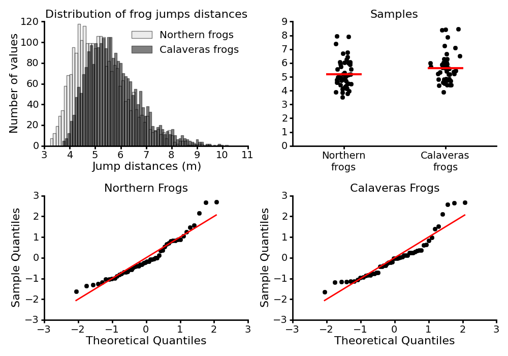
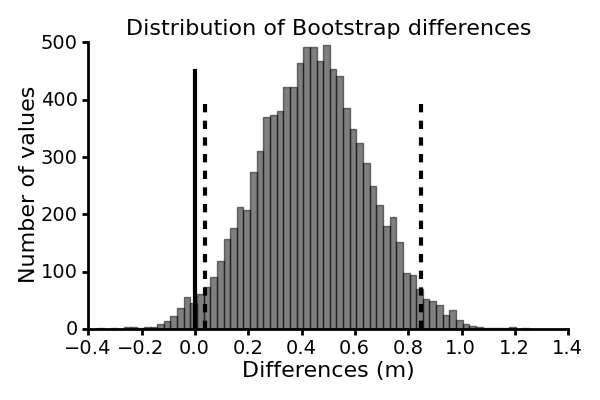

Making do with what you have: Use your bootstraps
This page is dedicated to providing more information about the code and the data used in the paper Making do with what you have: Use your bootstraps by Guillaume Calmettes, Gordon Drummond and Sarah Vowler [link to be added].
This paper is part of the Statistical Perspectives Paper Series, initiated by the Physiological and Pharmacological Societies in the UK, which aims at providing clear non-technical guidance for authors on best practice in statistical testing and data presentation.
The code is written in the Python programming language, and requires the Numpy library which provides support for array manipulation.
The source code is currently hosted on GitHub at: https://github.com/gcalmettes/bootstrap-tools. You can directly view it or download it from the links at the top of this page.
Four bootstrap methods are provided in the source code:
bootstrap: generates x bootstrap samples from a given data. The number of bootstrap samples
(10000 by default) as well as the replacement method (replacement=True by default)
can be tweaked.
All of the other functions of the package are based on this function.bootci: computes the confidence intervals of a statistic of a given data,
using the Bootstrap Percentile Interval method.
By default the analysed statistic is the mean, and the level of confidence is 0.05
(95% confidence interval). Note: the Bias-Corrected Accelerated Interval method, will be
added in a near future.bootpv: computes the one-tailed pvalue of a statistics (mean by default) when comparing
two data samples.bootci_diff: computes the confidence intervals of the difference of a statistic
(mean by default) when comparing two data samples.Please refer to the docstring of the functions to know more about the options available for each of them.
Let us use the data described in the paper, and provided in the data folder of the
source code. The data represent the jump distances of two different groups of frogs,
one from the north of California and one from the region of Calaveras, where escapees
from the jumping competition have interbred with native frogs.
Let us take the 50 first data points of each group of frogs as samples to work with.
Assuming that you are running a python interpreter in a working directory in which you have moved the files of the downloadable archive, the code below will allow you to load the data and take the 50 first data points for each group of frogs. Note that this code use the numpy library.
# import of the numpy library
import numpy as np
# load the data for each population of frogs
northern_population = np.loadtxt('data/population_distribution-1.txt')
calaveras_population = np.loadtxt('data/population_distribution-2.txt')
# take the 50 first data points of each group of frogs
northern_sample = northern_population[:50]
calaveras_sample = calaveras_population[:50]
The top-left panel of the figure below shows the distribution of the jumps for the two groups of frogs, and the top-right panel display our samples taken from those populations.

Suppose we want to compare estimates of the two populations from which these samples have been drawn. First, let us inspect a Quantile-Quantile plot of our samples (bottom panels). Q-Q plots give us a visual check whether a sample follows a specific distribution, by comparing the quantiles of two distributions against each other. The case that we are interested in most often, is a test for normality. Here, as suggested by the points not following a linear pattern, it turns out that our samples are not consistent with a normal distribution, making difficult to use statistical tools based on the assumption of normal distribution of the data. The bootstrap method, however, does not need such a strong assumption, and therefore can be used to analyze our data.
Suppose we want to compute the confidence interval of the mean for each sample.
This can be achieve with the bootci function, if you have imported it into
your namespace:
# import all the bootstrap functions in the namespace
from code.bootstrap_routines import *
# compute the 95% confidence interval of the mean for each group
bootci(northern_sample)
bootci(calaveras_sample)
Which gives the results below:
Note that your values will differ slightly.
By default, the bootci function compute the 95% confidence intervals
of the mean, but any other level of confidence and any other estimate of the sample
can be chosen, by setting the parameters alpha and stat to the desired values
and function respectively. As an example, the code below return the 90% confidence
interval of the median for the Northern frogs sample:
# compute the 90% confidence interval of the median of the northern frogs
bootci(northern, stat=np.median, alpha=0.1)
Which returns:
Note that your values will differ slightly.
